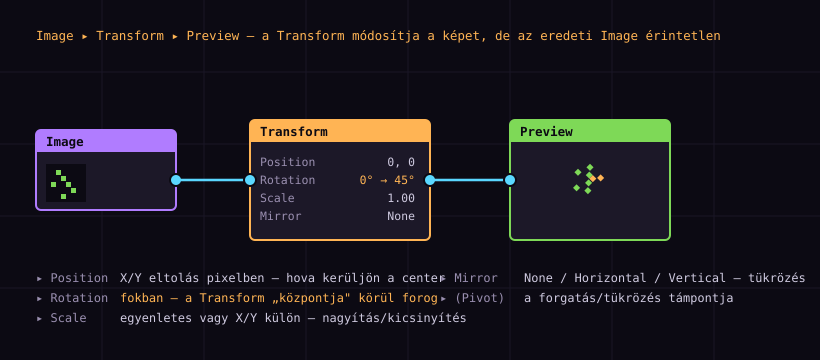
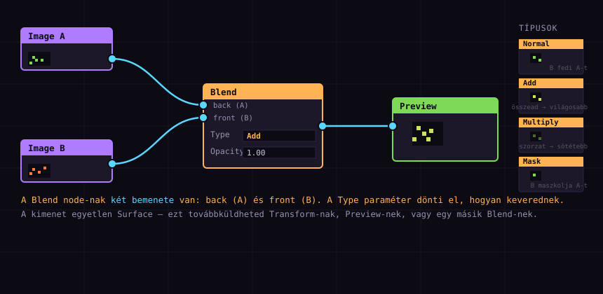
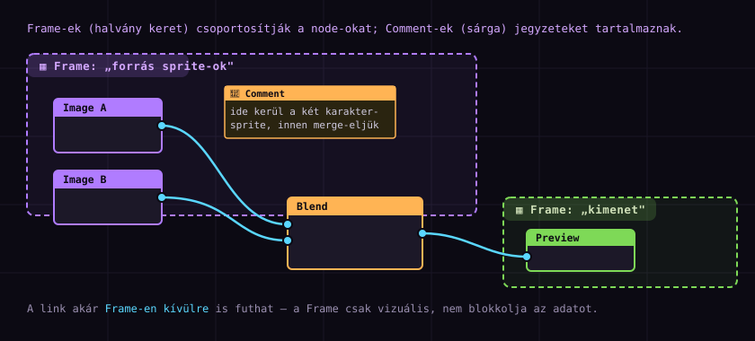

Node-ok és kapcsolatok
— mélyebben: Transform & Blend
Az 1. részben megismerkedtél a Graph-fel, létrehoztad az első node-odat, és össze is kötötted egy Preview-vel. Most mélyebbre megyünk: megtanuljuk a Transform node-ot (pozíció, forgatás, skálázás, tükrözés), a Blend node-ot (két kép egyesítése különféle módokon), és hogy hogyan rendszerezd a egyre növekvő gráfodat Frame-ekkel és Comment-ekkel.
Ismétlés és hova tartunk
Az 1. rész végére volt egy működő gráfod: Image ▸ Preview. Láttad, hogyan folyik át a Surface-adat egyik node-ból a másikba, és hogy a Preview megmutatja az eredményt. Ezen a ponton a gráf még passzív: a képet változatlanul jeleníti meg.
Ebben a részben a gráf aktívvá válik — node-okat teszünk az Image és a Preview közé, amelyek átalakítják vagy egyesítik a képet. Két fő csapásirányunk van:
(A) Transform — EGY bemenet módosítása Image ─▸ Transform ─▸ Preview ▸ pozíció / forgatás / skála / tükör ▸ kimenet = ugyanaz a kép, átalakítva (B) Blend — TÖBB bemenet egyesítése Image A ─┐ ├─▸ Blend ─▸ Preview Image B ─┘ ▸ Type: Normal/Add/Multiply/Mask… ▸ kimenet = egyetlen összekevert Surface
.pxc projekted (Image ▸ Preview), nyisd meg: File ▸ Open. Ha nem, gyorsan csinálj egyet — 2 perc, a lépések az 1. rész 6–9. fejezetében. Ezt fogjuk bővíteni.
A Transform node
A Transform node (narancs fejléc, a Transform kategóriában) a leggyakoribb „alakító" node. Egy bemenete van (Surface) és egy kimenete (Surface) — a kimenet a bemenet átalakított változata. Négy fő paramétere van:
| Paraméter | Mit csinál | Tipikus érték |
|---|---|---|
| Position | X/Y eltolás pixelben — hova kerüljön a kép origójához képest. | 0, 0 |
| Rotation | Forgatás fokban, a Pivot körül. | 0° → 45° |
| Scale | Nagyítás/kicsinyítés. Lehet egyenletes vagy X/Y külön. | 1.00 |
| Mirror | Tükrözés: None / Horizontal / Vertical. | None |

45°-ra van állítva — a Preview-ben forgatva látod a sprite-ot. Az eredeti Image (bal) közben érintetlen.Lépésről lépésre
- A meglévő Image → Preview gráfodban törd el a linket: klikk a vonalra, Del.
- Jobb-klikk a Graph-on → Add Node ▸ Transform ▸ Transform.
- Húzd az Image kimenetét a Transform bemeneti junction-ára.
- Húzd a Transform kimeneti junction-át a Preview bemenetére.
- Jelöld ki a Transform node-ot, és az Inspector-ban állítsd
Rotation=45. A Preview azonnal frissül.
Próbáld megváltoztatni a többi paramétert is: Scale = 2 (kétszeres nagyítás), Mirror = Horizontal (vízszintes tükör). Figyeld, ahogy minden mozdulat azonnal megjelenik a Preview-ben — ez a non-destructive workflow lényege.
Ha a Scale > 1, a kép kinőheti a vászon (Canvas) méretét — ilyenkor a szélek „levágódnak". Ezt úgy orvosolhatod, hogy a Transform node elé teszel egy Canvas vagy a kép elé egy megfelelő méretű Surface-et (erről részletesebben az 5. rész Export-tutorialjában). Egyelőre elég annyi: a Transform nem automatikusan növeli a vásznat.
Pivot — hol a forgatás közepe?
A Rotation és Mirror paraméterek viselkedése egy rejtett dolgon múlik: a Pivot-on. Ez az a pont, ami körül a kép forog / amire tükröződik. Alapból a Pivot a kép középpontja — de ezt megváltoztathatod.
Pivot = középpont (alapértelmezett): ▢▢▢ ▢▢▢ ▸ 45° forgatás → a kép a saját ▢▢▢ közepe körül pörög, helyben marad Pivot = bal-felső sarok: ▢▢▢ ▢▢▢ ▸ 45° forgatás → a kép a ▢▢▢ bal-felső sarok körül pörög, „kirepül" Pivot = (X, Y) tetszőleges: ▸ bármelyik pixel lehet a forgástengely — pl. egy karakter lábánál (lépés animációnál)
Center). Ha másra van állítva, ott pörög — azonnal látni fogod a Preview-ben.
Non-destructive — az eredeti érintetlen
Mielőtt továbbmegyünk, érdemes tudatosítani egy fontos dolgot. A Transform node nem módosítja az Image-t. Csak egy új Surface-t állít elő, amin már rajta van az átalakítás. Az eredeti képet a memóriában, változatlanul, többször is felhasználhatod — például egy másik ágon.
┌─▸ Transform (Rotation 45°) ─▸ Preview A
Image ───┤
└─▸ Transform (Scale 2.0) ─▸ Preview B
az Image-t egyszer töltöttük be — két különböző ágon két különböző
átalakítást kapunk, és egyik sem írja felül a másikat.
Ha a Preview-ben az eredeti (nem forgatott) és a forgatott kép egyszerre jelenik meg, az azért van, mert a Preview node az Image-re van kötve, nem a Transform-ra. Ellenőrizd a linket: a Preview bemenete a Transform kimenetéről jöjjön, ne közvetlenül az Image-ről.
A Blend node — két bemenet
Eddig minden node-nak egy bemenete volt. A Blend node (narancs, Generate kategória) az első, aminek két bemenete van: back (háttér, „A") és front (előtér, „B"). A kimenet a kettő egyesített Surface-e, a választott mód szerint.

back bemenetére, az Image B (narancs sprite) a front bemenetére csatlakozik. A Type paraméter (itt Add) dönti el, hogyan keverednek — jobb oldalon négy mód eredménye látható.Lépésről lépésre
- Csinálj két Image node-ot: az egyik a meglévő sprite-od, a másiknak tölts be egy másik képet (vagy használj ugyanazt más paraméterekkel).
- Jobb-klikk → Add Node ▸ Generate ▸ Blend.
- A Blend node-on két baloldali junction van — az egyik
back, a másikfront. Húzd az Image A kimenetét aback-re, az Image B-t afront-ra. - A Blend kimenetét kösd egy Preview-re.
- Az Inspector-ban próbálgasd a
Typeparamétert — lásd a következő fejezetet.
Normal módban a front ráborul a back-re (mint egy réteg). A Mask módban a front maszkolja a back-et. Ha az eredmény „fordítottnak" tűnik, cseréld meg a két bemenetet — csak húzd az egyik junction-ról a másikra.
Blend módok — Type paraméter
A Type paraméter dönti el, hogyan számolódik ki a két bemenetből a kimenet. A PXC több tucat módot kínál; a legfontosabbakat érdemes megjegyezni:
| Mód | Hogyan működik | Tipikus használat |
|---|---|---|
| Normal | A front ráborul a back-re (rétegezés, opacity-szel). | Karakter egy háttér elé, réteg kompozitálás. |
| Add | Pixelértékek összeadódnak → világosabb eredmény. | Glow, tűz, fényeffektek „ráégő" része. |
| Subtract | A front kivonódik a back-ből → sötétebb. | „Kivágás", árnyék, maszkolt sötétítés. |
| Multiply | Pixelértékek szorzata → sötétebb, de árnyaltabb. | Árnyékolás, szín-„szorzás" (színes fény). |
| Screen | „Inverz multiply" — világosít, de lágyabban mint az Add. | Lágy glow, köd, fényáteresztés. |
| Mask | A front alpha-ja maszkolja a back-et. | Egy alak alapú kivágás másik képből. |
| Max / Min | Pixelenkénti maximum / minimum. | Kombinált maszkok, határ-összevonás. |
Bal-lent: front (B) — narancs pötty.
Jobb: a választott móddal egyesített eredmény.
Add-ot használ egy árnyék effekthez, csakhogy az Add világosít (árnyékhoz Multiply vagy Subtract való). Először gondold végig: világosítani vagy sötétíteni akarok? — abból jön a mód.
Opacity és sorrend
A Blend node-on az Opacity paraméter (0.0–1.0) a front bemenet áttetszőségét állítja. 1.0-nál a front teljesen látszik, 0.0-nál eltűnik — csak a back marad. Ez a legegyszerűbb módja az „áttűnés" effektnek, és az első paraméter, amit animálni érdemes (a 3. részben megtanuljuk).
Láncolt Blend — több kép egyesítése
Egy Blend node pontosan két bemenetet egyesít. Három vagy több képhez láncolnod kell — az első Blend kimenete lesz a második back bemenete:
Image A ─┐ ├─▸ Blend 1 ─┐ Image B ─┘ │ ├─▸ Blend 2 ─▸ Preview Image C ────────────────┘ (front = C) Eredmény = ((A op B) op C) — balról jobbra halad a kompozitálás. Minden Blend saját Type/Opacity-t vihet — így rétegenként állíthatod a módot.
back-je. Ha megfordítod a sorrendet, az Add és Normal ugyanazt adja (kommutatívak), de a Subtract, Multiply, Mask nem!Blend és két Image gyorsan kibogozhatatlan lesz. Dupla-klikk a node nevére (a fejlécen), és nevezd át: glow-blend, shadow-mult, hero-img. Egy kis fegyelem sokat számít a 4–5. rész bonyolultabb gráfjainál.
Frame — csoportosítás
Ha a gráfod 10+ node-os lesz (és az lesz), a vászon hamar átláthatatlanná válik. A Frame node (a Generate vagy a collection kategóriában) egy vizuális keret, amibe több node-ot beletehetsz — átlátható csoportokat alkotva.

- Jobb-klikk → Add Node ▸ (Frame kategória) ▸ Frame.
- Létrejön egy nagy, halvány keret a vásznon — méretezheted a fogantyúival.
- Húzd bele a kívánt node-okat (vagy fordítva: rajzold meg a keretet a meglévő node-ok köré).
- A Frame fejlécén dupla-klikkelve elnevezheted a csoportot (pl. „effekt lánc", „export ág").
Fontos: a Frame nem módosítja az adatfolyamot. Csak vizuális rendező — a benne lévő node-ok továbbra is külön node-ok, a linkek akár ki is futhatnak a Frame-ből (lásd az ábrán: a Blend a lila Frame-en kívül van, de a linkek bemennek). A Frame nem „csomópont" a gráf értelmében, csak egy háttér-keret.
Comment — jegyzetek
A Comment node (sárga, „sticky" megjelenésű) egy szöveges jegyzet a gráfban. Nem csatlakozik semmihez — csak emlékeztetőt tartalmaz. Kezdőként fölöslegesnek tűnhet, de amint egy projektedet két hét múlva visszanyitod, hálás leszel érte.
- Jobb-klikk → Add Node ▸ (…) ▸ Comment.
- A sárga dobozban gépelsz — több soros szöveget is írhatsz.
- Mozgasd oda, ahová tartozik (egy bonyolult Blend mellé: „itt trial-and-error volt a Type, próbáld Multiply-al is").
- Miért egy adott értéken van egy paraméter („Rotation 15°, mert a 20°-nál túl nyúlt").
- Mit csinál egy ág („ez az ág a glow-t készíti, a másik az árnyékot").
- Todo — „még animálni kell a Scale-t".
Gyakori gráf-minták
Íme pár visszatérő minta, amit érdemes felismerni — saját projektjeidben is újra meg újra találkozni fogsz velük:
| Minta | Struktúra | Mire jó |
|---|---|---|
| előtte / utána | Image → Preview, és Image → Transform → Preview | Eredeti és átalakított párhuzamos összehasonlítása. |
| blend-lánc | Több Image láncolt Blend-del | Több réteg/kép kompozitálása (háttér + karakter + glow). |
| maszkolt átalakítás | Image → Transform, és egy maszk Blend front-ja | „Ebből az alakból látszódjon csak" — kivágás. |
| függő Preview-ök | Egy ágon több Preview node | A lánc különböző pontjainak vizsgálata debugoláshoz. |
┌──────────────────────────▸ Preview (eredeti)
Image ────────┤
└─▸ Transform ─▸ Blend <─ Image (glow) ─▸ Preview (eredmény)
Bal-ág: az eredeti kép változatlanul. Jobb-ág: transformálva + blendelve egy glow-jal.
Két Preview = két ablak — egyszerre látod a „előtte" és „utána" állapotot.
Összefoglaló & merre tovább?
Ezzel már elég eszközt összeszedtél ahhoz, hogy önállóan kísérletezz. Végigtekintve:
| Fogalom | Tanultad |
|---|---|
| Transform node | Egy bemenet átalakítása: Position, Rotation, Scale, Mirror. |
| Pivot | A forgatás/tükrözés támpontja; alapból Center, de állítható. |
| non-destructive | Az eredeti Image érintetlen; több ágon többször felhasználható. |
| Blend node | Két bemenet (back/front) egyesítése — Type paraméterrel. |
| blend módok | Normal/Add/Subtract/Multiply/Screen/Mask — világosít vs. sötétít. |
| láncolt Blend | Több kép egyesítése: az első Blend kimenete a következő back-je. |
| Frame / Comment | Vizuális csoportosítás és jegyzetelés a gráfban. |
Csináld végig: tölts be két képet (akár ugyanaz a sprite kétszer), kösd őket egy Blend-be, és próbálgasd végig az összes Type-ot. Aztán tegyél közéjük egy Transform-et (az egyik Image után forgass 45°-ot), és figyeld, hogyan változik az eredmény. Végül nevezd el a node-okat és tegyél egy Comment-et. Mentsd el a projektet — a 3. részben ezt fogjuk animálni.
A sorozat következő részei
- 3. rész — Animáció alapok: keyframe-ek, interpoláció (linear/smooth/hold), loop, és a
Opacityanimálása Blend-en (az első igazi „mozgó" effekt). - 4. rész — Import/Export workflow + spritesheet packelés.
- 5. rész — A Clone node: a legnagyobb kezdő csapda.
- Később — MK Blast tűz/robbanás, részecskék, effectors, feedback loop, texture mapping, Bevy-integráció.